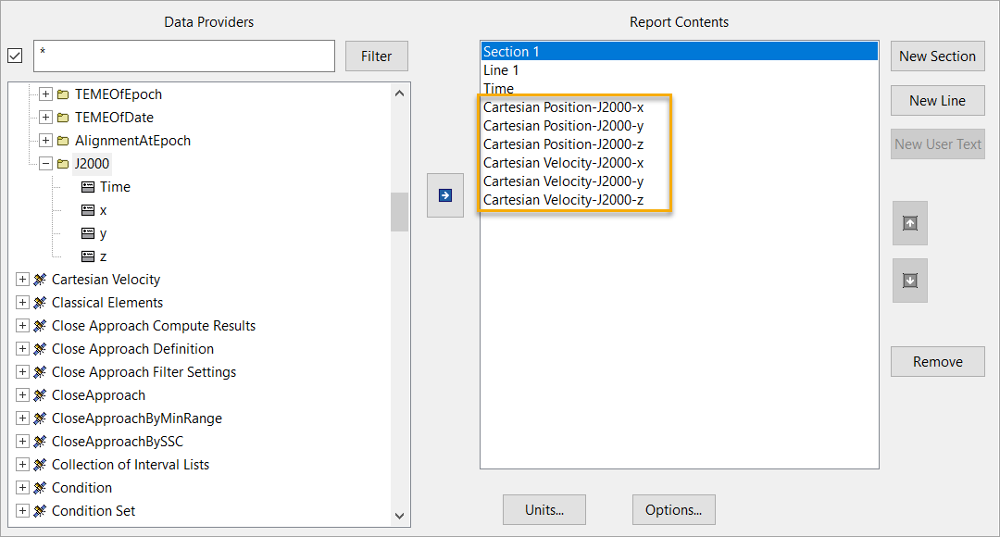
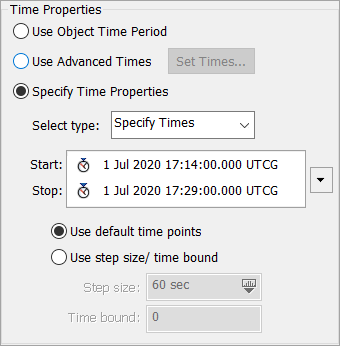
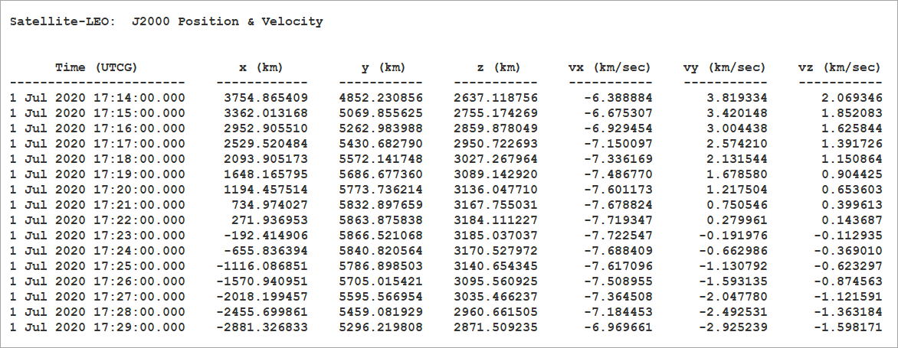

Results and graphs#
This tutorial demonstrates how the STK object model provides direct access to the data provider tools exposed by each object in STK that form the foundation of the report styles in the GUI.
The following example uses the J2000 Position Velocity report to demonstrate the retrieval of data through the object model. This report consists of specific J2000 data provider elements from two groups: Cartesian Velocity and Cartesian Position.

Launch a new STK instance#
Start by launching a new STK instance. In this example, STKEngine is used.
[1]:
from ansys.stk.core.stkengine import STKEngine
stk = STKEngine.start_application(no_graphics=False)
print(f"Using {stk.version}")
Using STK Engine v12.10.0
Create an STK scenario using the STK Root object:
[2]:
root = stk.new_object_root()
root.new_scenario("GraphsAndResults")
Once the scenario is created, it is possible to show a 3D graphics window by running:
[3]:
from ansys.stk.core.stkengine.experimental.jupyterwidgets import GlobeWidget
globe_widget = GlobeWidget(root, 640, 480)
globe_widget.show()
[3]:

Show a 2D graphics window by running:
[4]:
from ansys.stk.core.stkengine.experimental.jupyterwidgets import MapWidget
map_widget = MapWidget(root, 640, 480)
map_widget.show()
[4]:

Set the scenario time period#
Using the newly created scenario, set the start and stop times. Rewind the scenario so that the graphics match the start and stop times of the scenario:
[5]:
scenario = root.current_scenario
scenario.set_time_period("1 Jul 2020 17:14:00.00", "1 Jul 2020 17:29:00.00")
root.rewind()
Adding a satellite to the scenario#
Now that a new scenario is available, add a new satellite:
[6]:
from ansys.stk.core.stkobjects import STKObjectType
satellite = root.current_scenario.children.new(
STKObjectType.SATELLITE, "SatelliteTwoBody"
)
Ensure that the satellite’s associated times use the scenario’s times as well.
[7]:
from ansys.stk.core.stkobjects import PropagatorTwoBody, PropagatorType
satellite.set_propagator_type(PropagatorType.TWO_BODY)
propagator = PropagatorTwoBody(satellite.propagator)
propagator.ephemeris_interval.set_start_and_stop_times(
"1 Jul 2020 17:14:00.00", "1 Jul 2020 17:29:00.00"
)
propagator.propagate()
Setup data providers for use in the object model#
To retrieve the data for the J2000 Position Velocity report, setup its specific data providers for use in the Object Model. Use the various DataProvider interfaces to do this:
[8]:
from ansys.stk.core.stkobjects import DataProviderGroup
cart_vel = DataProviderGroup(satellite.data_providers["Cartesian Velocity"])
cart_pos = DataProviderGroup(satellite.data_providers["Cartesian Position"])
cart_vel_j2000 = cart_vel.group.item("J2000")
cart_pos_j2000 = cart_pos.group.item("J2000")
The DataProviderCollection and DataProviderGroup variables can be used to access information about the J2000 Position Velocity report.
[9]:
print('Some data providers available for the the "SatelliteTwoBody" satellite:')
data_providers = list(satellite.data_providers)
for index in range(len(data_providers)):
if index > 9:
print(f"\t...and {len(data_providers) - 10} more ")
break
print("\t" + str(data_providers[index].name))
print("Some data providers within the Cartesian Velocity group:")
for item in cart_vel.group:
print("\t" + str(item.name))
print("Some data providers within the Cartesian Position group:")
for item in cart_pos.group:
print("\t" + str(item.name))
Some data providers available for the the "SatelliteTwoBody" satellite:
Active Constraints
All Constraints
Angles
Articulation
Astrogator Accel Hist
Astrogator Log
Astrogator MCS Ephemeris Segments
Astrogator Maneuver Ephemeris Block Final
Astrogator Maneuver Ephemeris Block History
Astrogator Maneuver Ephemeris Block Initial
...and 150 more
Some data providers within the Cartesian Velocity group:
TrueOfDateRotating
Fixed
ICRF
MeanOfDate
MeanOfEpoch
TrueOfDate
TrueOfEpoch
B1950
TEMEOfEpoch
TEMEOfDate
AlignmentAtEpoch
J2000
Some data providers within the Cartesian Position group:
TrueOfDateRotating
Fixed
ICRF
MeanOfDate
MeanOfEpoch
TrueOfDate
TrueOfEpoch
B1950
TEMEOfEpoch
TEMEOfDate
AlignmentAtEpoch
J2000
The basic interfaces are now setup to compute information from the data providers that the report is using. Next, cast these objects to provide the IDataProvider interface with inputs so it can compute the proper data.
Data provider “PreData” inputs#
Some data providers require input data before the calculation can provide data results. This data is known as PreData. There are two ways to ascertain if PreData is required for a particular data provider:
Refer to the data provider documentation which provides the format of the PreData if any is required.
Retrieve the data provider schema and parse it for PreData tags.
Use the DataProviderCollection.get_schema() method to get the schema for all STK data providers.
[10]:
schema = str(satellite.data_providers.get_schema())
Once the format of the PreData is known, set the IDataProvider.pre_data property. This property must be set before issuing the data provider’s calculation method.
Set the pre_data property on the IDataProvider interface#
The following example demonstrates setting the satellite’s object path as the PreData for the RIC Coordinates data provider and then calls the data provider’s computation execution method.
[11]:
from ansys.stk.core.stkobjects import DataProviderResult, DataProviderTimeVarying
provider = DataProviderTimeVarying(satellite.data_providers["RIC Coordinates"])
provider.pre_data = "Satellite/SatelliteTwoBody"
result = provider.execute("1 Jul 2020 17:14:00.00", "1 Jul 2020 17:29:00.00", 1)
Data provider time inputs#
In the Time Period section of the Report window in STK, highlight J2000 Position Velocity and click the Specify Time Properties radio button. The J2000 Position Velocity report uses a time period to provide the underlying data provider’s information about what data to compute. Provide the same information to the object model data providers.

Retrieve the data#
There are three ways to compute the data, depending on the data provider type. The first method requires a time interval and step size, the second requires only a time interval, and the third is independent of time.
Provide input information to the data providers by casting the data provider interfaces to the proper execution interface. In the case of the Cartesian Velocity and Cartesian Position data providers, cast to DataProviderTimeVarying:
[12]:
vel_time_var = DataProviderTimeVarying(cart_vel_j2000)
pos_time_var = DataProviderTimeVarying(cart_pos_j2000)
Retrieve the information from the data providers. The data is always returned as a DataProviderResult object. Provide the DataProviderTimeVarying.execute() method of the DataProviderTimeVarying interfaces with the data provider inputs (start time, stop time, and step size):
[13]:
vel_result = vel_time_var.execute("1 Jul 2020 17:14:00.00", "1 Jul 2020 17:29:00.00", 1)
pos_result = pos_time_var.execute("1 Jul 2020 17:14:00.00", "1 Jul 2020 17:29:00.00", 1)
vel_result and pos_result now contain the data from the J2000 Cartesian Velocity and Cartesian Position data providers, more data than the original report contained.
Retrieve specific elements#
Recall that the original Cartesian Position Velocity report contained only four elements of the Cartesian Velocity J2000 group: x, y, z, and speed. Similarly, the Cartesian Position J2000 data provider contained within your report style only contains three elements: x, y, and z.
When the J2000 data provider of Cartesian Velocity was executed, seven elements were retrieved instead of the four specifically contained in the report, adding the time, radial, and intrack elements to the DataProviderResult. To be precise as possible, DataProviderResultshould contain only the elements which were contained in the original report. To do this, use theDataProviderTimeVarying.execute_elements()` method.
First, specify in an array the elements to retrieve from the data provider. Next, pass the array into DataProviderTimeVarying.execute_elements():
[14]:
vel_elems = ["x", "y", "z", "speed"]
pos_elems = ["x", "y", "z"]
vel_result = vel_time_var.execute_elements(
"1 Jul 2020 17:14:00.00", "1 Jul 2020 17:29:00.00", 60, vel_elems
)
pos_result = pos_time_var.execute_elements(
"1 Jul 2020 17:14:00.00", "1 Jul 2020 17:29:00.00", 60, pos_elems
)
The original data from the J2000 Position Velocity report is now stored in DataProviderResult objects and ready to traverse.
Traverse the result data#
Review the original report. The data in the report consisted of time intervals with various elements.

Similarly, the result needs to be cast to the appropriate interface to make use of the data. In the case of the J2000 Cartesian Velocity and Position data providers, that interface is the DataProviderResultIntervalCollection. Since each data provider result shares the same result type, consolidate the data traversal into one method, which takes a DataProviderResult:
[15]:
def write_interval_data(result: DataProviderResult):
"""Traverse and write the data stored in a DataProviderResult."""
intervals = result.intervals
# iterate through the intervals
for interval in intervals:
print(f"Interval from {interval.start_time} to {interval.stop_time}:")
# iterate through the datasets stored in the interval
for data_set in interval.data_sets:
print(
f"\tFound {data_set.count} values for {data_set.element_name} (element type {data_set.element_type}, {data_set.dimension_name} dimension):"
)
# get the values stored in the datasets
values = data_set.get_values()
# iterate through the array of values
for value in values:
print(f"\t\t{str(value)}")
Note: the type of data returned by the DataProvider can be determined using the DataProviderResult.category property, which returns an enumeration describing the interface. The DataProviderResult.value property is then cast to one of three interfaces, depending on the category enumeration: DataProviderResultIntervalCollection, DataProviderResultSubSectionCollection, or DataProviderResultTextMessage.
Complete the output#
Finally, call the method with DataProviderResult arguments. The data from the J2000 Position Velocity report is traversed and output:
[16]:
print("Position Results:")
write_interval_data(pos_result)
print("Velocity Results:")
write_interval_data(vel_result)
Position Results:
Interval from 1 Jul 2020 17:14:00.000 to 1 Jul 2020 17:29:00.000:
Found 16 values for x (element type 0, Distance dimension):
6678.136999999842
6662.055595999814
6613.888738883715
6533.868407417515
6422.379991449177
6279.960435813884
6107.295654327432
5905.217226323169
5674.698391641722
5416.849363363476
5132.911980855586
4824.253728889795
4492.361151630885
4138.832693218803
3765.3709994230403
3373.77471744714
Found 16 values for y (element type 0, Distance dimension):
1.2844455118041068e-07
407.04478219807294
812.1291759033289
1213.3022344024714
1608.6318484279448
1996.2140516114755
2374.1821902710767
2740.715913492852
3094.049940212913
3432.4825610729454
3754.3838341085398
4058.203434790289
4342.478122619497
4605.838788311895
4847.017047632431
5064.851350122475
Found 16 values for z (element type 0, Distance dimension):
-0.0014439285727015064
221.00581861546254
440.9486841830188
658.7678751383198
873.4143417791785
1083.8543147167877
1289.0742836632373
1488.0858786481817
1679.9306301559957
1863.6845852578706
2038.4627575068937
2203.423389164732
2357.7720052324125
2500.7652397603797
2631.7144160097528
2749.988863222182
Velocity Results:
Interval from 1 Jul 2020 17:14:00.000 to 1 Jul 2020 17:29:00.000:
Found 16 values for x (element type 0, Rate dimension):
7.969357629372144e-07
-0.5358323531434941
-1.0690848547132925
-1.597188484213541
-2.1175998158204066
-2.627812470963073
-3.1253691894177638
-3.6078736638386957
-4.073002080732068
-4.5185143122870635
-4.942264705167773
-5.342212414297114
-5.716431231872658
-6.063118864269918
-6.380605612157488
-6.6673624120176225
Found 16 values for y (element type 0, Rate dimension):
6.789530475108605
6.7731807795289605
6.724210435379403
6.642855291139251
6.529507165313793
6.384711959378201
6.20916702863432
6.003717823643776
5.7693538184117195
5.507203744933367
5.218530157050754
4.9047233498069955
4.567294663576756
4.207869205226281
3.8281780213560204
3.4300497613226204
Found 16 values for z (element type 0, Rate dimension):
3.686413846300054
3.6775368027751996
3.650948193658638
3.6067760736564716
3.545233182285063
3.466615919285813
3.3713029171197983
3.2597532174173915
3.1325040601653185
2.9901682962787737
2.8334314360200348
2.6630483474788242
2.4798396210150284
2.284687617173175
2.0785322171024756
1.8623662959490732
Found 16 values for speed (element type 0, Rate dimension):
7.725760229169805
7.725760229169805
7.725760229169805
7.725760229169806
7.725760229169804
7.725760229169806
7.725760229169804
7.725760229169804
7.725760229169803
7.725760229169802
7.7257602291698015
7.725760229169803
7.7257602291698015
7.725760229169802
7.725760229169805
7.725760229169806
As previously noted, it is up to you to decide in what unit the data is returned. Issuing the following command before calling write_interval_data() changes the data that is output to be displayed in meters per second, rather then kilometers per second.
[17]:
root.units_preferences.set_current_unit("DistanceUnit", "m")
write_interval_data(pos_result)
write_interval_data(vel_result)
Interval from 1 Jul 2020 17:14:00.000 to 1 Jul 2020 17:29:00.000:
Found 16 values for x (element type 0, Distance dimension):
6678136.999999843
6662055.595999814
6613888.738883715
6533868.407417515
6422379.991449177
6279960.435813884
6107295.654327433
5905217.226323169
5674698.391641722
5416849.3633634765
5132911.980855586
4824253.728889795
4492361.151630885
4138832.693218803
3765370.99942304
3373774.7174471403
Found 16 values for y (element type 0, Distance dimension):
0.00012844455118041069
407044.78219807293
812129.1759033289
1213302.2344024715
1608631.8484279448
1996214.0516114754
2374182.1902710767
2740715.913492852
3094049.940212913
3432482.5610729456
3754383.83410854
4058203.434790289
4342478.122619498
4605838.788311895
4847017.047632431
5064851.350122475
Found 16 values for z (element type 0, Distance dimension):
-1.4439285727015063
221005.81861546254
440948.6841830188
658767.8751383198
873414.3417791785
1083854.3147167878
1289074.2836632372
1488085.8786481817
1679930.6301559957
1863684.5852578706
2038462.7575068937
2203423.389164732
2357772.0052324124
2500765.23976038
2631714.4160097525
2749988.863222182
Interval from 1 Jul 2020 17:14:00.000 to 1 Jul 2020 17:29:00.000:
Found 16 values for x (element type 0, Rate dimension):
0.0007969357629372144
-535.8323531434941
-1069.0848547132925
-1597.1884842135412
-2117.5998158204065
-2627.812470963073
-3125.3691894177637
-3607.873663838696
-4073.002080732068
-4518.514312287063
-4942.264705167773
-5342.212414297114
-5716.431231872658
-6063.118864269918
-6380.605612157488
-6667.362412017623
Found 16 values for y (element type 0, Rate dimension):
6789.530475108605
6773.180779528961
6724.210435379403
6642.855291139252
6529.507165313793
6384.711959378201
6209.16702863432
6003.717823643777
5769.35381841172
5507.2037449333675
5218.5301570507545
4904.723349806995
4567.294663576756
4207.869205226281
3828.1780213560205
3430.0497613226203
Found 16 values for z (element type 0, Rate dimension):
3686.413846300054
3677.5368027751997
3650.948193658638
3606.7760736564715
3545.2331822850633
3466.6159192858127
3371.302917119798
3259.7532174173916
3132.5040601653186
2990.1682962787736
2833.4314360200347
2663.0483474788243
2479.8396210150286
2284.687617173175
2078.5322171024754
1862.3662959490732
Found 16 values for speed (element type 0, Rate dimension):
7725.760229169805
7725.760229169805
7725.760229169805
7725.760229169806
7725.760229169804
7725.760229169806
7725.760229169804
7725.760229169804
7725.760229169803
7725.760229169802
7725.760229169801
7725.760229169803
7725.760229169801
7725.760229169802
7725.760229169805
7725.760229169806